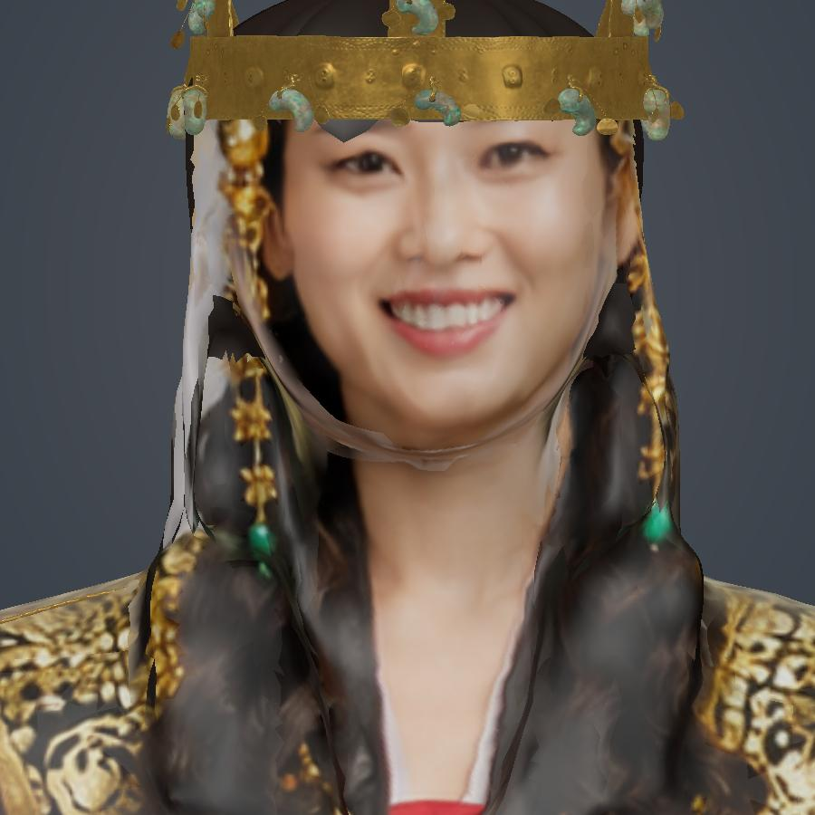
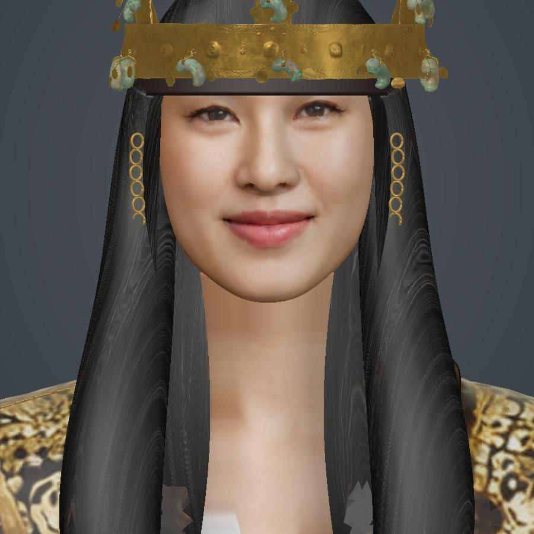
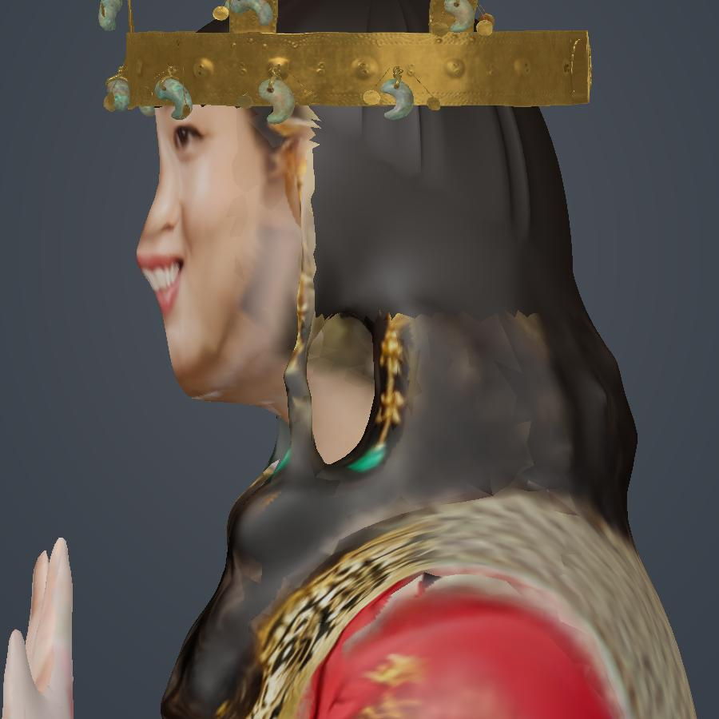
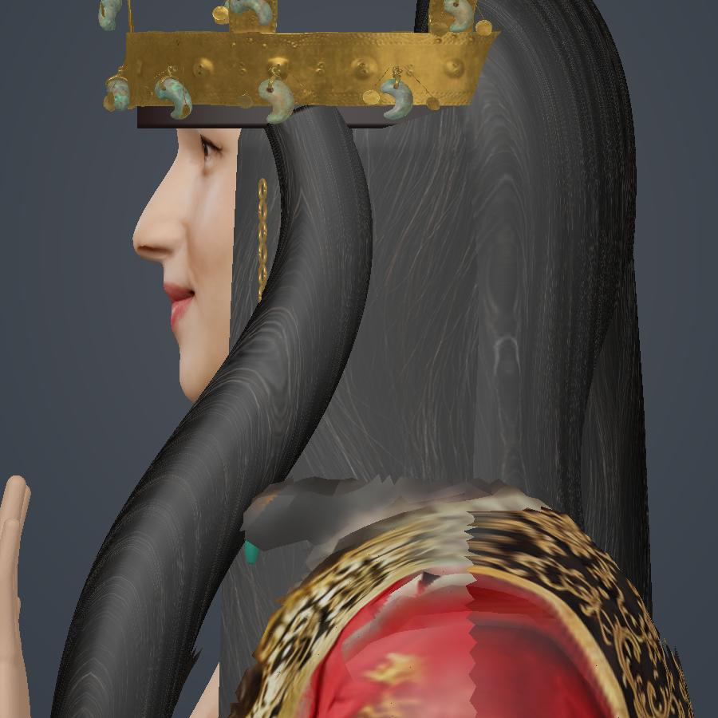
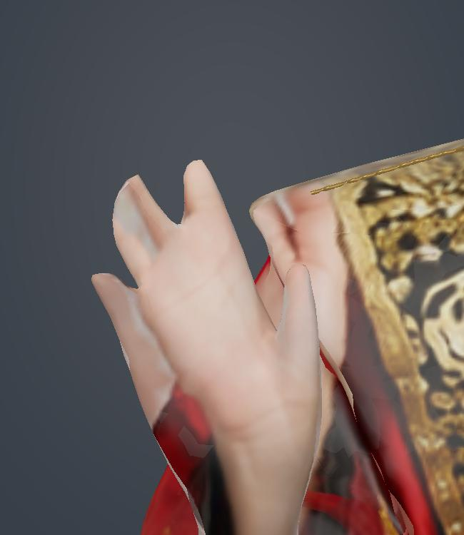
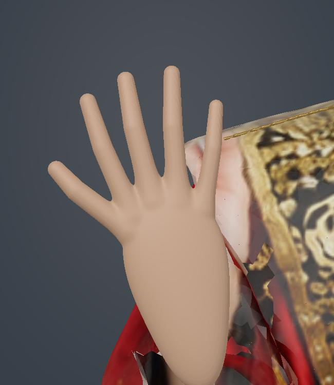
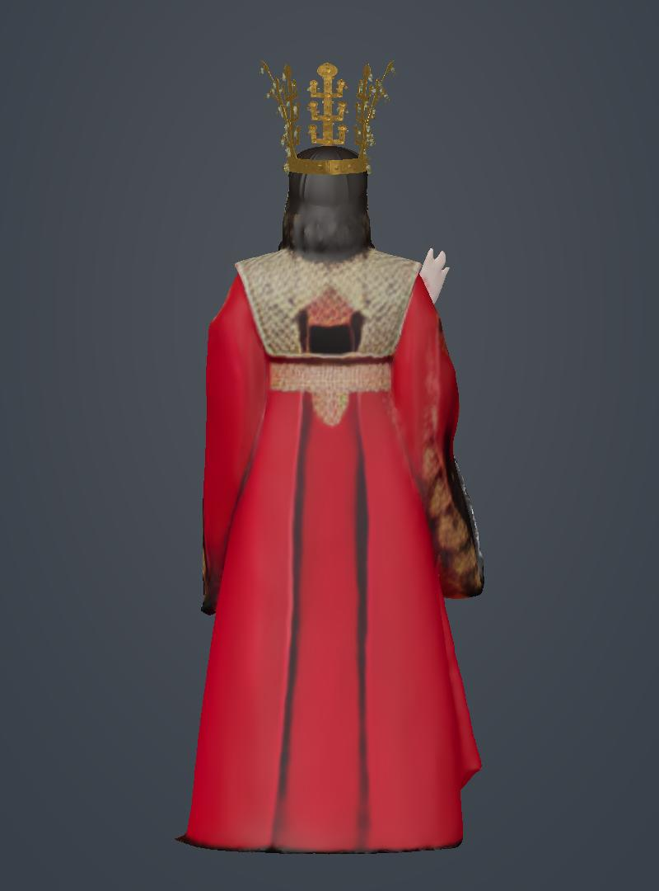
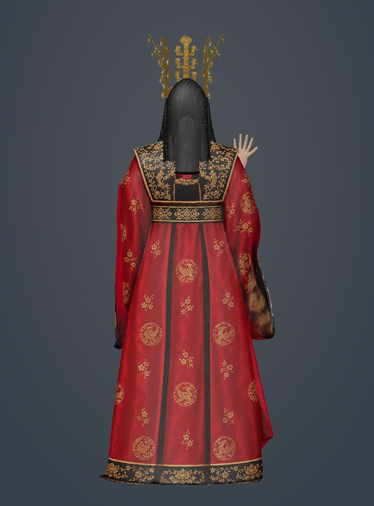

선덕여왕 수정 전후
v5 → v6 · 얼굴·턱·목과 들고 있는 손을 다시 만들고, 머리카락과 복식 뒷면을 보완했습니다. 아래는 같은 카메라·조명에서 실제 GLB를 렌더한 이미지입니다.
얼굴 확대


얼굴 옆면


손


복식 뒷면


드라마 사진과 의상 사진에서 분위기를 참고한 창작용 캐릭터입니다. 생성한 질감을 실제 3D 형상에 적용했습니다. 어깨·옆선의 일부 원본 질감 경계와 배 위에 놓인 손은 추가 보완 여지가 있으며, 휴대폰 AR 실기기 검수는 아직 하지 않았습니다.